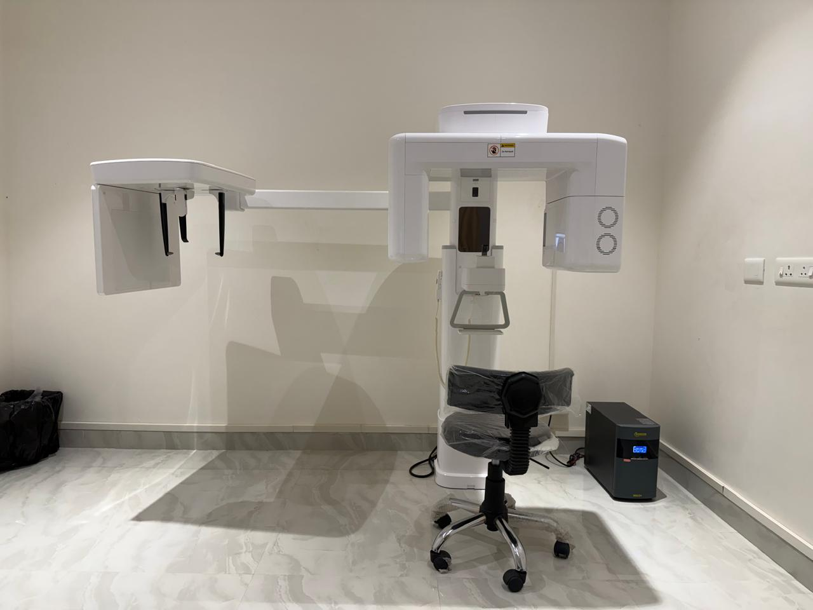
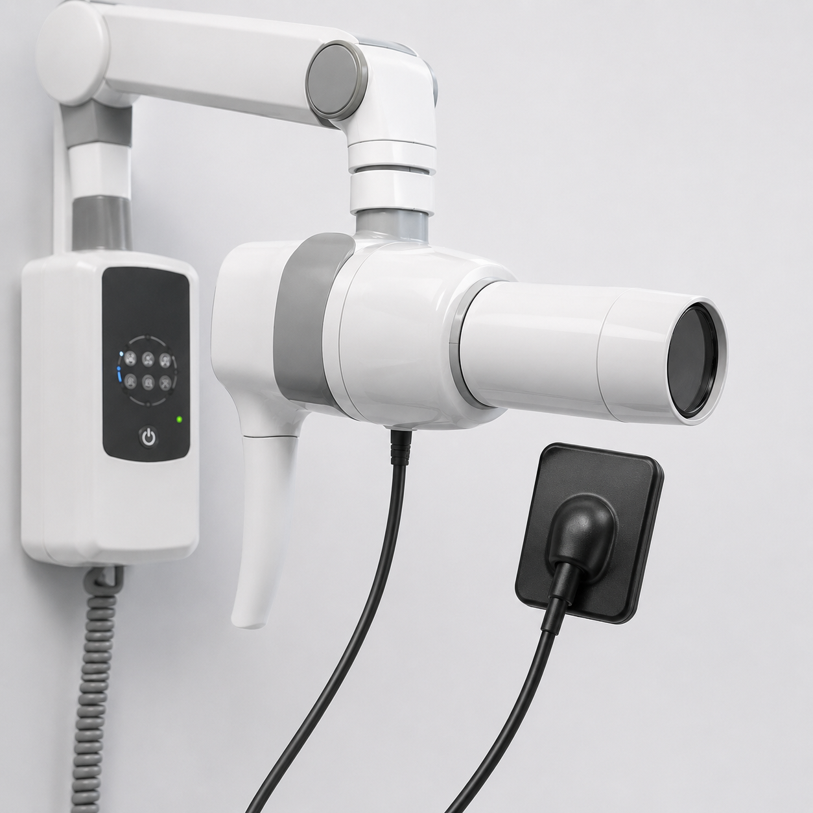

State-Of-The-Art Medical Equipment
As the best dental clinic in Kanyakumari, we take pride in offering sophisticated diagnostics. Darshan Dental uses cutting-edge tools, including in-house CBCT, OPG, and digital scan systems, to map out accurate treatment paths with minimal discomfort.
✦ Laser Unit
Our advanced dental laser unit provides painless, highly precise treatments for soft tissues. It significantly reduces bleeding and accelerates the healing process for gum surgeries and contouring, offering a far more comfortable patient experience.

✦ Thermoforming Machine
We utilize a high-precision vacuum thermoforming system to craft custom clear aligners, retainers, night guards, and bleaching trays right in our clinic. This in-house capability ensures a flawless fit and much faster delivery times for our patients.

✦ 3D Dental Printer
Equipped with cutting-edge 3D printing technology, we quickly and accurately produce dental models, surgical implant guides, and temporary crowns. This allows for highly customized, efficient, and reliable treatments.

✦ CBCT (Cone Beam Computed Tomography)
Our in-house CBCT scanner provides highly detailed 3D imaging of teeth, soft tissues, nerve pathways, and bone in a single scan. It is essential for precise dental implant planning, complex extractions, and accurate endodontic diagnoses.

✦ iTero Intraoral Scanner
Ditching uncomfortable dental putty for high-speed digital optics, our iTero scanner captures thousands of data points to create a precise 3D model of your teeth. It is used for Invisalign aligner fabrication and exact custom crowns.

✦ Intra-oral Camera
Our intra-oral camera is a small, pen-sized imaging device that captures crystal-clear, real-time photographs from inside the mouth. It displays magnified views of teeth, gums, and decay on a chairside screen — making diagnosis transparent, accurate, and easy for patients to understand.

✦ RVG Digital X-ray System
RVG (Radio Visio Graphy) is a high-resolution digital X-ray sensor that renders clinical images instantly on screen, eliminating conventional film processing. It detects hidden interproximal decay and bone loss in seconds with up to 90% less radiation exposure than traditional X-ray methods.

✦ Rotary Endodontics System
Our rotary endodontic system uses flexible nickel-titanium files powered by a precision micro-motor to navigate, clean, and shape root canals with minimal effort. This technology completes root canal procedures faster, more accurately, and with significantly greater patient comfort compared to traditional hand files.